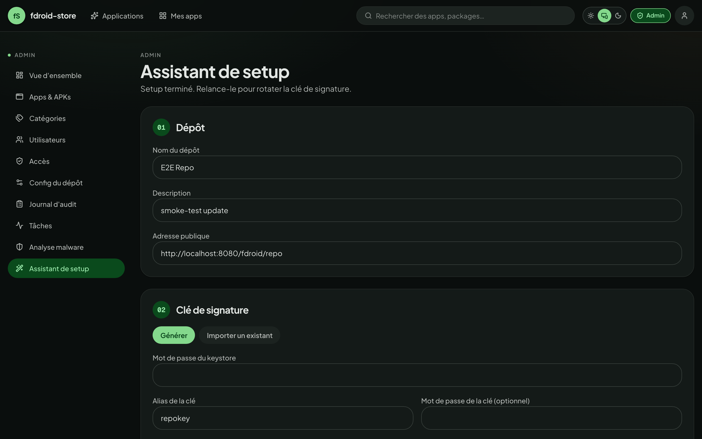
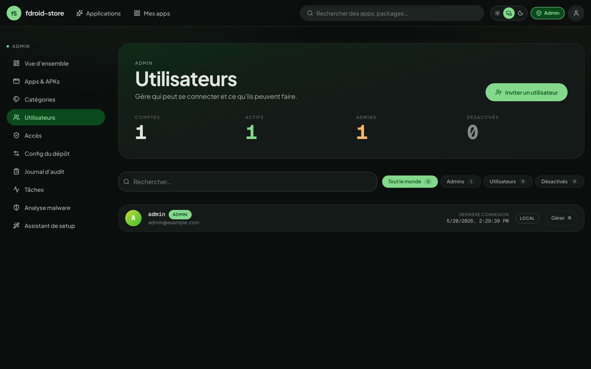
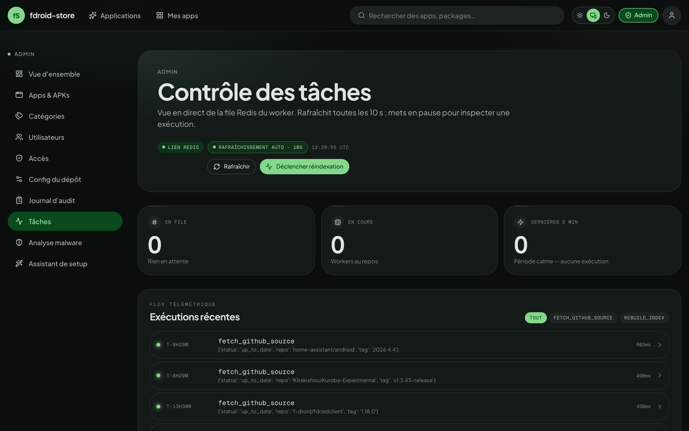

Administration.
What you do as an admin: bootstrap the repo, gate signups, moderate
uploads, pick a retention policy, and watch the jobs & audit log.
Everything below lives under /admin/*.
01Setup wizard
First-boot ritual at /admin/setup. Required before the F-Droid client can pull a signed index.

Generating a fresh key
-
Pick the metadata
The wizard reads
KEY_DNAMEfrom your env as the default Distinguished Name. Override if needed — this string ends up baked into the cert, so use real-looking values (CN, O, C). -
Generate
The backend shells out to
keytoolagainst your container's JVM. Output is written toKEYSTORE_PATHinside the keystore volume — survives container restarts. -
Back up the keystore
This is the most important secret in the system. If you lose it, every F-Droid client that pinned your repo certificate will refuse the next index — they can't recover. Treat it like a TLS key.
Importing an existing keystore
The wizard accepts .p12 (PKCS#12) and .jks. It needs the file plus the store password, the key alias, and the key password. After verifying the key responds to a test sign, it copies the file into the keystore volume.
Switching key mid-life will break all F-Droid clients that already pinned your repo. Plan for a complete client re-add when you do this.
02Repo settings
Under /admin/repo you control how the F-Droid index represents itself.
- Name & description
- Shown by the F-Droid client when subscribing to the repo. Free text in any language.
- Repo icon
- PNG, recommended 512×512. Surfaces in the F-Droid client header.
- Address
- The
PUBLIC_REPO_URLbaked into the signed index. Changing it forces every F-Droid client to re-add the repo. - Default retention
- Maximum versions kept per app, repo-wide.
0= unlimited. See §07. - Scan on upload
- If ClamAV is wired up, every incoming APK is scanned before it lands. Refused uploads return
422. - Daily rescan
- Re-scan every stored APK overnight. Findings show up in
/admin/scans.
Reindex
The Trigger reindex button enqueues an arq job that rebuilds both the public and private indexes (index-v1.jar + index-v2.json + entry.jar). Watch the result in /admin/jobs.
Automatic reindexes (after every upload / publish / edit) coalesce into one run per minute — a burst of events folds into a single rebuild. The Trigger reindex button bypasses that dedup, so it always actually runs even if a recent automatic rebuild is still cached.
If apps you uploaded recently aren't showing in your F-Droid client, press Trigger reindex once. Older builds pinned every enqueue to the same job id, which arq dedupes against the 24h result key — silently swallowing every rebuild after the day's first. Fixed in 1.0.9; the manual button is the recovery for instances that already accumulated invisible uploads.
03Users & invites
/admin/users lists everyone with an account, with quick filters for admin, disabled, and OIDC-only. From there you can:
- Promote a user to admin (or demote one — orphan-admin protection prevents you from removing the last admin).
- Disable an account. They keep ownership of their apps; their sessions are revoked.
- Force-rotate the password (sends them a reset; if local-only).
- Delete the account. Their apps stay under the new owner you pick at deletion time.
Invites
With ALLOW_SIGNUP=false in .env, the public Sign up form is hidden — but you can still onboard users by minting an invite code.

An invite can be open or bound to a specific email. Bound invites can only be redeemed by their email — useful when you don't fully trust the channel you're sharing the code through.
04Access & auth policy
/admin/access holds toggles that apply repo-wide:
- Public signup
- Mirrors
ALLOW_SIGNUP. Off ⇒ only invites can create accounts. - Require TOTP for admins
- Forces every admin to enrol a second factor. Existing admins are given a grace period before lockout.
- Require passkey for admins / for uploaders
- Two independent per-role toggles. When on, every account in that role must have at least one registered WebAuthn passkey to log in. Accounts caught between the flip and their first enrolment receive a short-lived
enrollment_requiredtoken at the post-password step and are routed through a forced-enrolment screen. - OIDC auto-create
- When on, first-time OIDC users auto-provision an account. Off ⇒ they need an invite or a pre-existing account.
- Session lifetime
- Override
ACCESS_TOKEN_EXPIRE_MINUTESandREFRESH_TOKEN_EXPIRE_DAYSat runtime without restarting the backend.
05Categories
/admin/categories is a small CRUD page. Categories are surfaced both in the F-Droid client (as the section list) and in the web UI's filter rail.
- Drag to reorder — that order is the one the F-Droid client renders.
- Translations are stored alongside the slug; the UI uses the active locale.
- Deleting a category un-assigns it from any apps that used it — the apps survive.
06Moderating apps
/admin/apps lists every app on the instance. Filters: pending review, private, has unscanned APK, orphaned.
APK lifecycle
When a maintainer uploads, the APK lands in pending. The admin queue at /admin/apps?status=pending shows it with:
- Parsed manifest (package, version, min/target SDK, permissions list).
- The signing certificate's SHA-256 — and a flag if it doesn't match the app's previously-accepted cert.
- Latest ClamAV verdict, if scanning is on.
- The maintainer's account and a quick link to their other apps.
Two actions:
- Publish ⇒ the APK is included in the next reindex (which is auto-triggered).
- Reject ⇒ the file is kept for audit but excluded from the index. Maintainer is notified.
App-level moderation
From an app detail page (admin view), you can:
- Force the visibility (public ⇆ private) regardless of what the maintainer set.
- Override the suggested version — useful if the latest upload has a known regression.
- Transfer ownership to another user.
- Hard-delete the app and all its APKs (cannot be undone — confirmed twice).
07Retention cap
fdroid-store doesn't keep an unbounded version history by default. Two layers of policy:
- Repo default
- Set in
/admin/repo— applies to every app unless overridden.0= unlimited. - Per-app override
- Set in
/my-apps/{id}by an admin only. Can only tighten the repo default — never widen it. If the repo default is 5 and the override is 10, the effective cap is 5.
Eviction is FIFO by versionCode: when an upload would push the count above the cap, the oldest version is removed. The currently-suggested version is never evicted, even if it's the oldest.
A non-admin maintainer cannot bypass the repo default. The override field on the app page is admin-only — the UI hides it for everyone else.
08Scanning & quality
/admin/scanning (renamed from /admin/scans in v1.2) is the single page that hosts every APK-quality knob: malware scanning, vulnerability scanning, and Reproducible Builds verification. Each block surfaces its env-driven availability chip + the runtime toggle.
ClamAV — malware
When the clamav compose profile is active and CLAMAV_HOST is set:
- Daemon health — green when the latest clamd ping returned within the threshold, red when it didn't. Click to ping now.
- Scan on upload — refuses INFECTED uploads at the API door (
422+clamav.positiveaudit entry). The file is kept underquarantine/. - Daily re-scan — the worker re-checks every published APK at 03:00 UTC so signature DB updates catch previously-clean files retroactively.
- Scan now — ignores the daily-cadence guard. Useful right after a signature DB update or to confirm wiring.
- Findings history — every scan result with status (clean / infected / error / pending), signatures, the actor that triggered it.
Trivy — CVE / SBOM
When TRIVY_SERVER_URL points at a reachable trivy server (typically the bundled trivy compose profile — see install §07):
- Auto-scan new uploads — every newly attached APK is queued for SBOM extraction (CycloneDX) + a vulnerability lookup. Results are private: owner / collaborator / admin only.
- Manual re-scans are available from each APK's row in
/my-apps/[id](the side-sheet behind the Détails button shows the full CVE table). - Per-severity counts (CRITICAL / HIGH / MEDIUM / LOW / UNKNOWN) and the NVD-linked CVE table land in the SBOM record.
Reproducible Builds verification
Master switch for the per-APK RB verification feature (the badge on /apps/[package] and the editor on /my-apps/[id]). Defaults on; toggling it off:
- 403s the
POST /apks/{id}/reproducibilityandverify-from-urlendpoints with a clear "feature disabled" detail. - Hides the public badge on app pages and the per-APK editor in the version list.
- Preserves historical data — the
apks.reproducibility_*columns stay in the database, so re-enabling restores every prior verification untouched.
09Backup & restore
/admin/backup drives an asynchronous, encrypted, passphrase-protected backup of any subset of the four operational components:
- DB —
pg_dump --format=customof the whole Postgres database (users, apps, audit log, SBOMs, …). - Keystore — the
.p12signing key. The most critical component — lose it and every F-Droid client that already added your repo refuses to update past that point. - Assets — icons, screenshots, feature graphics, banners.
- APKs — every published binary. The biggest by far; can be opted out for a config-only backup.
Workflow
- Open
/admin/backup→ tick the components you want → type a passphrase → start the job. - The worker assembles the archive in
BACKUP_TMP_DIR(thebackup_tmpvolume in the stock compose), encrypts it with AES-256-CBC + HMAC-SHA256 using a key derived from your passphrase, and posts the result. - Progress is polled live; the same job appears in
/admin/jobswith its trace. - Once complete, the job lands in the history list with a Download button. The archive stays on the
backup_tmpvolume so subsequent downloads are instant — wipe the volume to free disk.
Restore
Same page: drop the encrypted .tar.enc archive, type the passphrase that produced it, tick which components to apply. The restore is selective — you can restore only the DB to recover from a bad migration without overwriting the storage volume, or only the keystore to recover a lost signing key while keeping the current data.
The passphrase is never persisted. The archive header carries only the KDF salt and verification tag; without the passphrase the archive is cryptographically unrecoverable. Store the passphrase in a password manager separate from where you keep the archive.
Take a backup right after the setup wizard mints the keystore, and again after every significant config change (categories, retention defaults, OIDC issuer). Keep at least one copy off-host.
10Jobs dashboard
/admin/jobs is the operator's pane of glass over arq.

Listed jobs:
- rebuild_index — the F-Droid index builder. Fires after every accepted upload + on manual trigger.
- scan_apks_periodic — daily ClamAV sweep (default 03:00 UTC).
- scan_apk_cve — per-APK Trivy scan, enqueued automatically after every upload when CVE scanning is enabled.
- scan_github_sources_periodic — coordinator that fans out per-source fetches.
- fetch_github_source — per-app forge polling + import + eviction + reindex.
- create_backup / restore_backup — the async backup pipeline (see §09). Heavy-IO jobs that produce / consume the encrypted archive on the
backup_tmpvolume.
Each row has a re-run link that requeues the same job with the same args. Failures show their traceback in a side drawer.
11Audit log
Every privileged action lands here at /admin/audit. Examples:
auth.login,auth.login.mfa,auth.logout,auth.refreshuser.created,user.disabled,user.role_changedapp.created,app.visibility_changed,app.transferred,app.deletedapk.uploaded,apk.published,apk.rejected,apk.evictedapi_key.created,api_key.revokeddeploy_token.created,deploy_token.revoked,deploy_token.usedgithub_source.upserted,github_source.scannedclamav.positive,clamav.clearedapk.reproducibility_updated— every write to an APK's RB status, including the matched reference hash and URL.apk.cve_scan_*— SBOM extraction + CVE lookup outcomes.webauthn.credential_added,webauthn.credential_removed,auth.login.passkeybackup.job_created,backup.job_completed,backup.restored— the encrypted-archive workflow (components included, byte size, who triggered it).repo.config_updated— every flip of the scanning / RB / WebAuthn force toggles is captured with the full payload.
Filter by actor, target, action prefix, IP, time range. Each row carries a structured payload field — token prefixes, state transitions, file hashes — but never plaintext credentials.
The audit page offers a CSV export of the current filter. The same data is available via GET /api/v1/admin/audit for piping into your own SIEM.